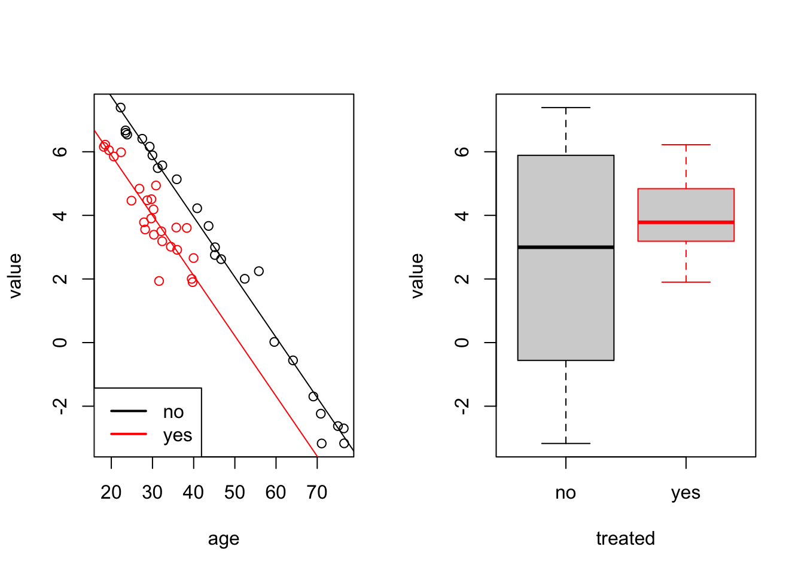

Section 15 Factors
In this section we will learn how to fit linear models when some or all of the inputs are categorical. Such inputs are sometimes called “factors”. These can be binary (e.g. sex recorded as male/female) or ordered (e.g. quality recorded as poor/medium/good) or unordered (e.g. marital status recorded as single/married/divorced/widowed).
15.1 Indicator Variables
Our aim here is to include categorical input variables within the usual regression model \[\begin{equation*} y = X\beta + \varepsilon. \end{equation*}\]
Assume that \(x_j \in \{a_1, \ldots, a_k\}\) is a factor which has \(k\) possible values. The possible values of the factor, \(a_1, \ldots, a_k\) are also called the levels of the factor. The easiest way to include a factor in a regression model is via indicator variables. For this we represent \(x_j\) using \(k-1\) columns in the design matrix, say \(\tilde x_1, \ldots, \tilde x_{k-1}\), where \[\begin{equation*} \tilde x_{\ell i} = \begin{cases} 1 & \mbox{if $x_{ji} = a_\ell$ and} \\ 0 & \mbox{otherwise,} \end{cases} \end{equation*}\] for all \(\ell \in \{1, \ldots, k-1\}\) and \(i \in \{1, \ldots, n\}\). Using this convention, \(x_{ji} = k\) is represented by setting \(\tilde x_{1,i} = \cdots = \tilde x_{k-1,i} = 0\). The value \(a_k\) which is not represented as a separate column is called the reference level. The regression coefficients corresponding to the columns \(\tilde x_1, \ldots, \tilde x_{k-1}\) can be interpreted as the effect of level \(a_\ell\), relative to the effect of level \(a_k\). Since the indicator is constant \(1\) for all samples corresponding to a given factor, regression coefficients representing factors lead to changes of the intercept, rather than of slopes.
We are using only \(k-1\) columns to represent a factor with \(k\) levels in order to avoid collinearity. If we would use \(k\) columns, defined as above, we would get \[\begin{equation*} \sum_{\ell=1}^k \tilde x_{\ell i} = \mathbf{1}, \end{equation*}\] and in a model with an intercept we would have exact collinearity of the corresponding columns in the design matrix \(X\).
Example 15.1 Consider a dataset consisting of a numerical input variable
and a binary factor for gender (female, male).
Assume we are given data
\((1, \mathrm{male})\), \((2, \mathrm{female})\), \((3, \mathrm{female})\).
Then we can encode this data using the following design matrix:
| intercept | \(x_1\) | \(1_\mathrm{\{female\}}(x_2)\) |
|---|---|---|
| 1 | 1 | 0 |
| 1 | 2 | 1 |
| 1 | 3 | 1 |
In R there is a dedicated type factor for categorical variables.
If factors appear in the input of linear regression problem, the
function lm() will automatically create the indicator variables
for us.
Example 15.2 Here we simulated data which could describe the effect of some medical treatment. In the simulated data we have two groups, one which has been “treated” and a control group. There is a “value” which decreases with age, and is lower for the group which has been treated (the intercept is 10 instead of 12).
age1 <- runif(25, 18, 40)
group1 <- data.frame(
value=10 - 0.2 * age1 + rnorm(25, sd=0.5),
age=age1,
treated="yes")
age2 <- runif(25, 18, 80)
group2 <- data.frame(
value=12 - 0.2 * age2 + rnorm(25, sd=0.5),
age=age2,
treated="no")
data <- rbind(group1, group2)
data$treated <- factor(data$treated, levels = c("no", "yes"))The last line of the code tells R explicitely that the treated column
represents a factor with levels “no” and “yes”. Internally, this column will
now be represented by numbers 1 (for “no”) and 2 (for “yes”), but this numeric representation
is mostly hidden from the user. Now we fit a regression model:
m <- lm(value ~ ., data = data)
summary(m)
Call:
lm(formula = value ~ ., data = data)
Residuals:
Min 1Q Median 3Q Max
-1.76041 -0.22188 0.04535 0.23802 1.29250
Coefficients:
Estimate Std. Error t value Pr(>|t|)
(Intercept) 11.525306 0.282369 40.82 < 2e-16 ***
age -0.189367 0.005557 -34.08 < 2e-16 ***
treatedyes -1.845246 0.180890 -10.20 1.68e-13 ***
---
Signif. codes: 0 '***' 0.001 '**' 0.01 '*' 0.05 '.' 0.1 ' ' 1
Residual standard error: 0.5452 on 47 degrees of freedom
Multiple R-squared: 0.9635, Adjusted R-squared: 0.962
F-statistic: 620.5 on 2 and 47 DF, p-value: < 2.2e-16We see that R used “no” as the reference factor, here. The
regression coefficient treatedyes gives the relative change
of the “yes”, compared to “no”. The true value is
the difference of the means: \(10 - 12 = -2\), and the estimated
value -1.89 is reasonably close to this. The fitted values
for this model are
\[\begin{equation*}
\hat y
= \begin{cases}
\beta_0 + \beta_1 x_1 & \mbox{if not treated, and} \\
(\beta_0 + \beta_2) + \beta_1 x_1 & \mbox{if treated}.
\end{cases}
\end{equation*}\]
To get a better idea of the model fit, we plot the data together with separate regression lines for “yes” (red) and “no” (black):
par(mfrow = c(1, 2))
plot(value ~ age, data = data,
col = ifelse(treated == "yes", "red", "black"))
# regression line for the reference level `treatment == "no"`
abline(a = coef(m)[1], b = coef(m)[2])
# regression line for the level `treatment = "yes"`:
# here we need to add the coefficient for `treatedyes`
# to the intercept
abline(a = coef(m)[1] + coef(m)[3], b = coef(m)[2], col="red")
legend("bottomleft", c("no", "yes"),
col = c("black", "red"), lwd = 2)
# also show a boxplot for comparison
boxplot(value ~ treated, data = data,
border = c("black", "red"))
We can see that the two regression lines, corresponding to the two levels are parallel. They have the same slope but different intercepts.
The last command shows a boxplot of value for comparison.
The boxplot does not allow to conclude that the treatment had an effect,
whereas the linear model, which accounts for age, shows the effect
of the treatment as a difference in intercepts. The ***
in the treatedyes row of the summary(m) output shows that the
difference in intercepts is statistically significant.
15.2 Interactions
In some situations, the strength of the dependency of the response \(y\) to an input \(x_1\) might depend on another input, say \(x_2\). The simplest such situation would be, if the coefficient \(\beta_1\), corresponding on \(x_1\) is itself proportional to \(x_2\), say \(\beta_1 = \gamma x_2\). In this case we have \(y = \cdots + \beta_1 x_1 = \cdots + \gamma x_1 x_2\). Traditionally, inputs added to a model which are the product of two or more of the original inputs are called interactions. As a general rule, an interaction is only included if the “main effects” are also included in the model, so in any variable selection procedure, we would not drop \(x_1\) or \(x_2\) if \(x_1 x_2\) is still in the model. An exception to this is when one can directly interpret the interaction term without the main effect.
In R, interactions (i.e. products of inputs) are represented by the
symbol : and * can be used to include two variables together with their
product. Note also, that if a variable is known to be a factor, and it is
included as an interaction term, then R will make sure to only remove the
interaction term in a backward variable selection procedure whilst the main
effects are also included.
Example 15.3 Consider the following toy dataset:
x1 <- c(2,2,2)
x2 <- 1:3In lm() and related functions we can write x1:x2 as a shorthand
for I(x1*x2):
model.matrix(~ x1 + x1:x2) (Intercept) x1 x1:x2
1 1 2 2
2 1 2 4
3 1 2 6
attr(,"assign")
[1] 0 1 2We can write x1*x2 as a shorthand for x1 + x2 + x1:x2:
model.matrix(~ x1*x2) (Intercept) x1 x2 x1:x2
1 1 2 1 2
2 1 2 2 4
3 1 2 3 6
attr(,"assign")
[1] 0 1 2 3Interactions also work for factors. In this case, products with all of the corresponding indicator variables are added to the model. while the base effect of factor variables is to have different intercepts for the different groups, using interactions with a factor allows to have different slopes for the different groups.
Example 15.4 The classical example of an interaction is to consider how the yield \(y\) of a crop is related to temperature \(x_1\) and rainfall \(x_2\). All these variables are continuous, but we might categorize rainfall as “wet” and “dry”. Then a simplistic view could be that, for high rainfall, the yield will be positively correlated with temperature, whereas for low rainfall the correlation may be slightly negative, because in hot weather, plants need more water, and if it is very hot and dry, the plants may even die.
We generate a toy dataset in R to represent such a situation:
T <- runif(25, 15, 35)
wet <- data.frame(
yield=40 + 7*T + rnorm(25, sd = 10),
temperature=T,
rainfall="high")
T <- runif(25, 15, 35)
dry <- data.frame(
yield=120 - 2*T + rnorm(25, sd = 10),
temperature=T,
rainfall="low")
crops <- rbind(wet, dry)
crops$rainfall <- factor(crops$rainfall, levels = c("low", "high"))Now we fit a model, including temperature, rainfall and
an interaction term:
m <- lm(yield ~ temperature*rainfall, data = crops)
summary(m)
Call:
lm(formula = yield ~ temperature * rainfall, data = crops)
Residuals:
Min 1Q Median 3Q Max
-22.8996 -6.3555 0.0346 5.9355 25.0553
Coefficients:
Estimate Std. Error t value Pr(>|t|)
(Intercept) 114.2722 9.0929 12.567 < 2e-16 ***
temperature -1.8873 0.3617 -5.219 4.21e-06 ***
rainfallhigh -71.5892 13.0342 -5.492 1.66e-06 ***
temperature:rainfallhigh 8.7043 0.5299 16.428 < 2e-16 ***
---
Signif. codes: 0 '***' 0.001 '**' 0.01 '*' 0.05 '.' 0.1 ' ' 1
Residual standard error: 10.42 on 46 degrees of freedom
Multiple R-squared: 0.9814, Adjusted R-squared: 0.9802
F-statistic: 810.2 on 3 and 46 DF, p-value: < 2.2e-16The fitted values for this model are \[\begin{equation*} \hat y = \begin{cases} \beta_0 + \beta_1 x_1 & \mbox{for low rainfall, and} \\ (\beta_0 + \beta_2) + (\beta_1 + \beta_3) x_1 & \mbox{for high rainfall}. \end{cases} \end{equation*}\] Finally, we can generate a plot of the data together with the two regression lines.
plot(yield ~ temperature, data=crops,
col = ifelse(rainfall == "low", "black", "red"))
abline(a = coef(m)[1], b = coef(m)[2])
abline(a = coef(m)[1] + coef(m)[3], b = coef(m)[2] + coef(m)[4],
col="red")
legend("topleft", c("dry", "wet"),
col = c("black", "red"), pch = 1)
As expected, the two lines have different intercepts and different slopes.
Summary
- Indicator variables can be used to represent categorical inputs in linear regression models.
- The levels of a factor correspond to different intercepts for the regression line.
- If interaction terms are used, the levels also affect the slope.